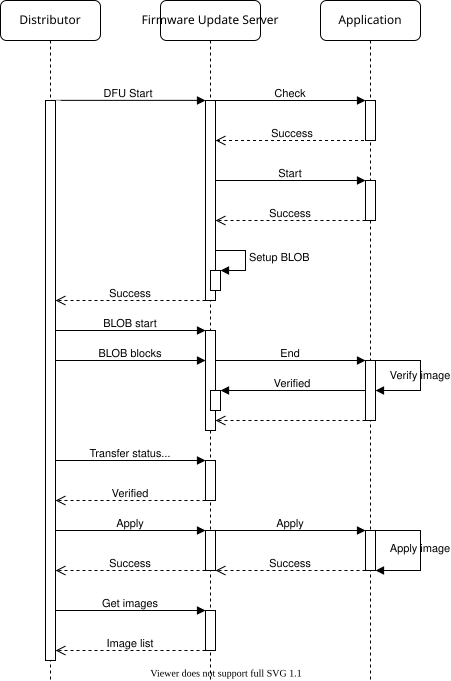

Firmware Update Server
The Firmware Update Server model implements the Target node functionality of the Device Firmware Update (DFU) subsystem. It extends the BLOB Transfer Server, which it uses to receive the firmware image binary from the Distributor node.
Together with the extended BLOB Transfer Server model, the Firmware Update Server model implements all the required functionality for receiving firmware updates over the mesh network, but does not provide any functionality for storing, applying or verifying the images.
Firmware images
The Firmware Update Server holds a list of all the updatable firmware images on the device. The full
list shall be passed to the server through the _imgs parameter in
BT_MESH_DFU_SRV_INIT, and must be populated before the Bluetooth Mesh subsystem is
started. Each firmware image in the image list must be independently updatable, and should have its
own firmware ID.
For instance, a device with an upgradable bootloader, an application and a peripheral chip with firmware update capabilities could have three entries in the firmware image list, each with their own separate firmware ID.
Receiving transfers
The Firmware Update Server model uses a BLOB Transfer Server model on the same element to transfer the binary image. The interaction between the Firmware Update Server, BLOB Transfer Server and application is described below:

Bluetooth Mesh Firmware Update Server transfer
Transfer check
The transfer check is an optional pre-transfer check the application can perform on incoming
firmware image metadata. The Firmware Update Server performs the transfer check by calling the
check callback.
The result of the transfer check is a pass/fail status return and the expected
bt_mesh_dfu_effect. The DFU effect return parameter will be communicated back to the
Distributor, and should indicate what effect the firmware update will have on the mesh state of the
device.
Composition Data and Models Metadata
If the transfer will cause the device to change its Composition Data or become unprovisioned, this should be communicated through the effect parameter of the metadata check.
When the transfer will cause the Composition Data to change, and the Remote Provisioning Server is supported, the Composition Data of the new firmware image will be represented by Composition Data Pages 128, 129, and 130. The Models Metadata of the new firmware image will be represented by Models Metadata Page 128. Composition Data Pages 0, 1 and 2, and Models Metadata Page 0, will represent the Composition Data and the Models Metadata of the old firmware image until the device is reprovisioned with Node Provisioning Protocol Interface (NPPI) procedures using the Remote Provisioning Client.
The application must call functions bt_mesh_comp_change_prepare() and
bt_mesh_models_metadata_change_prepare() to store the existing Composition Data and Models
Metadata pages before booting into the firmware with the updated Composition Data and Models
Metadata. The old Composition Data will then be loaded into Composition Data Pages 0, 1 and 2,
while the Composition Data in the new firmware will be loaded into Composition Data Pages 128, 129
and 130. The Models Metadata for the old image will be loaded into Models Metadata Page 0, and the
Models Metadata for the new image will be loaded into Models Metadata Page 128.
Limitation:
It is not possible to change the Composition Data of the device and keep the device provisioned and working with the old firmware after the new firmware image is applied.
Start
The Start procedure prepares the application for the incoming transfer. It’ll contain information about which image is being updated, as well as the update metadata.
The Firmware Update Server start callback must return a
pointer to the BLOB Writer the BLOB Transfer Server will send the BLOB to.
BLOB transfer
After the setup stage, the Firmware Update Server prepares the BLOB Transfer Server for the incoming transfer. The entire firmware image is transferred to the BLOB Transfer Server, which passes the image to its assigned BLOB Writer.
At the end of the BLOB transfer, the Firmware Update Server calls its
end callback.
Image verification
After the BLOB transfer has finished, the application should verify the image in any way it can to
ensure that it is ready for being applied. Once the image has been verified, the application calls
bt_mesh_dfu_srv_verified().
If the image can’t be verified, the application calls bt_mesh_dfu_srv_rejected().
Applying the image
Finally, if the image was verified, the Distributor may instruct the Firmware Update Server to apply
the transfer. This is communicated to the application through the apply callback. The application should swap the image and start running with
the new firmware. The firmware image table should be updated to reflect the new firmware ID of the
updated image.
When the transfer applies to the mesh application itself, the device might have to reboot as part of the swap. This restart can be performed from inside the apply callback, or done asynchronously. After booting up with the new firmware, the firmware image table should be updated before the Bluetooth Mesh subsystem is started.
The Distributor will read out the firmware image table to confirm that the transfer was successfully applied. If the metadata check indicated that the device would become unprovisioned, the Target node is not required to respond to this check.